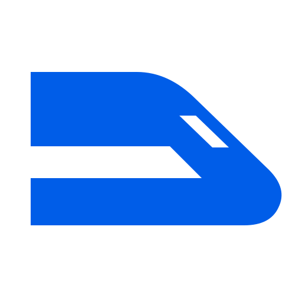

Agents hand off exact commits
Each agent commits and enqueues its branch. The queue records the exact commit.

mergetrainby OddfiniLocal merge queue for Git worktrees
mergetrain is a local merge queue for parallel LLM agents. These coding agents use large language models and work in Git worktrees. One runner merges queued branches in order, tests them together, and pushes the approved plan.
Open source · Runs locally · No account or hosted control plane
The integration problem
Without a shared integration workflow, an operator chooses branch order, repeats tests, resolves cross-branch failures, and controls pushes. One mergetrain runner merges and tests queued branches before an approved push.
One narrow workflow
mergetrain provides a Git worktree merge queue for committed branches. Queued branches form a train. Gates are the tests or checks you configure for the combined result.
Each agent commits and enqueues its branch. The queue records the exact commit.
One runner merges branches in enqueue order in an isolated worktree. It runs gates against the combined result.
The runner pushes the approved plan atomically. It records evidence for interrupted Git push recovery.
Default batch mode · 14 seconds · no sound needed
Work that needs a fix returns to its agent. Passing work can land while the repair continues. During checks, agents start their next task. The same four agents stay visible throughout this default batch loop.
Illustrated from recorded local commands, scripted changes and approvals. Agent lanes represent roles; letters track work. Timing is condensed. Agents can keep building in both modes. In ordered mode, an unresolved earlier submission holds later landings. Compare the two modes.
Use --brief --pause to read each step. Reproduce the continuous workflow.
C and D move ahead while A and B return for a fix. E and F are committed during the repair check. G and H drafts start during the next check. All three deployments retain approval and the default recheck. A fresh clone passes six tests. Four following drafts remain unsubmitted on the latest result.
Inspect the captured commands and output →Evidence before expansion
Owner-run Codex discovery cell on a fixed, product-name-free corpus.
Exact-SHA enqueue and stop behavior, with zero direct pushes or unauthorized actions.
Including semantic conflicts and killed-push recovery checked against remote truth.
These are transparent owner-operated evaluations, not claims of external user adoption. Inspect the benchmark evidence.
Works with the agents you already use
Agents in parallel Claude Code sessions commit and enqueue their branches. The plugin provides workflow guidance and a Model Context Protocol (MCP) server. Deploy tools require human confirmation.
Claude install guide →Queue branches from parallel Codex worktrees with the native skill. Add the Git marketplace and install the plugin. Its MCP server is pinned to the plugin release.
Codex install guide →Link the generated AGENTS.mergetrain.md or CLAUDE.mergetrain.md from your existing agent instructions. Task agents commit, enqueue, and stop.
One runner owns integration